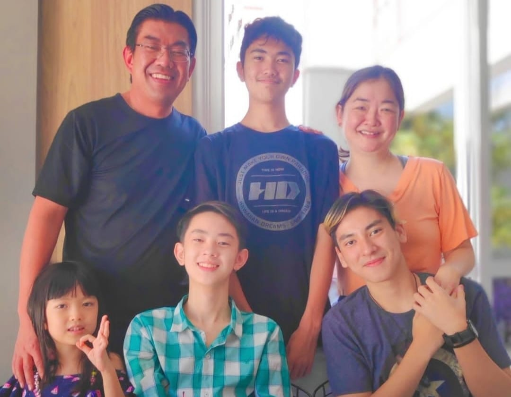

Família
Meu bisavô, Nobuaki Ohara veio com sua família do Japão ao Brasil em 1927. Naquela época, os integrantes da família trabalharam nas lavouras de café. Meu tataravô, Massaharu Ohara, em 28 de março de 1930 “adquire o lote 1 (20 alqueires, juridicamente registrado como Chácara Arara)”
Meu avô, Hideaki Ohara nasceu no Brasil e em busca de melhores condições para sua família em 1990 foi ao Japão para trabalhar como dekassegui, deixando esposa e filhos aqui no Brasil. Minha mãe, em setembro de 2000 também foi trabalhar no Japão, e lá, em 2007 eu nasci.
Hoje os descendentes de Massaharu Ohara (netos, bisnetos e tataranetos) exercem trabalhos diversos.
